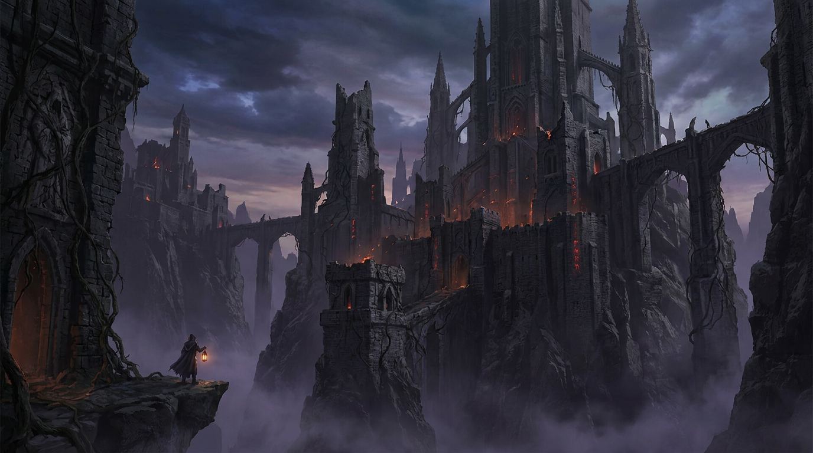

El Coliseo de Ceniza
La arena monumental donde la sangre vertida alimenta los crisoles de la ciudad y los combatientes se disputan fragmentos de alma ancestrales.
Donde el fuego primordial arde, las almas forjan el destino y la guerra sostiene la gloria eterna.
Erigida sobre los riscos del Abismo Olvidado, Nefatlantis es mucho más que una metrópolis de piedra negra y agujas góticas: es el epicentro viviente de un mundo forjado en el combate incesante. Mientras otros reinos sucumbieron ante el paso de las eras, nuestra ciudadela subsiste y prospera gracias a una economía basada en la guerra, la extracción de cristales de alma y el comercio sagrado de reliquias arcanas.
Guerreros de reinos distantes, hechiceros proscriptos, mercenarios curtidos y peregrinos de la llama confluyen en sus plazas para forjar pactos inquebrantables, batirse en duelo o consagrar sus vidas al Consejo de Ceniza.

Para aquellos exploradores que ingresan por primera vez por las Puertas del Juramento, la urbe ofrece puntos neurálgicos de trascendencia histórica y mística:
La arena monumental donde la sangre vertida alimenta los crisoles de la ciudad y los combatientes se disputan fragmentos de alma ancestrales.
Profundas galerías subterráneas donde los mineros extraen cristales arcanos bajo la atenta vigilancia de los centinelas autómatas.
El templo sagrado de los Guardianes de la Cripta, depositario de los grimorios prohibidos y reliquias de la Primera Guerra.
Descubre los detalles completos, ubicaciones y guías de ingreso en la sección de Lugares de Interés.
Para garantizar el orden cívico y la convivencia de las diversas facciones bélicas, todo forastero debe cumplir estrictamente las siguientes directivas antes de cruzar el segundo anillo murado: